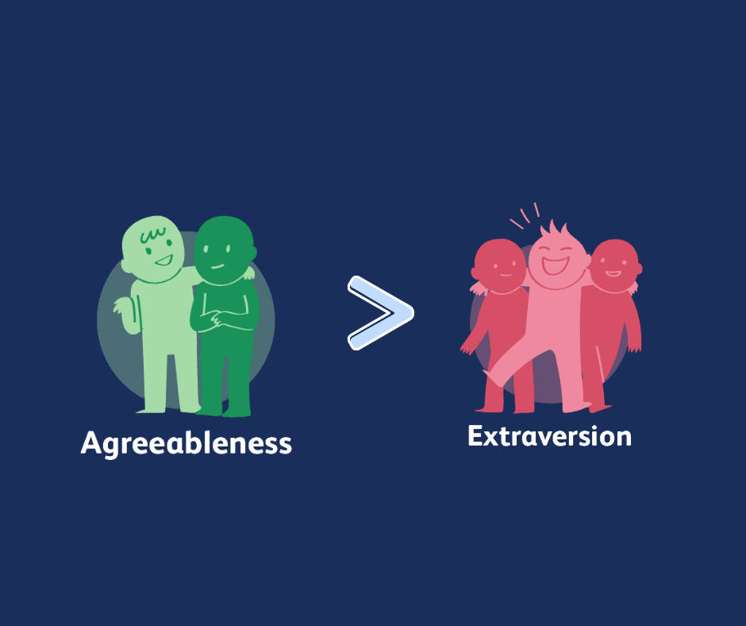
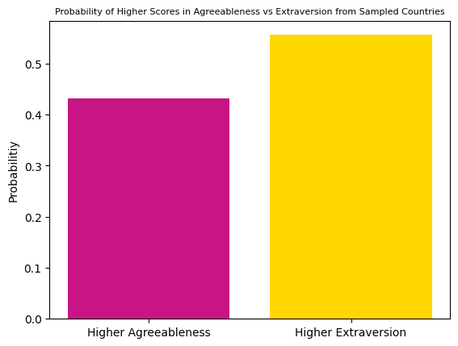
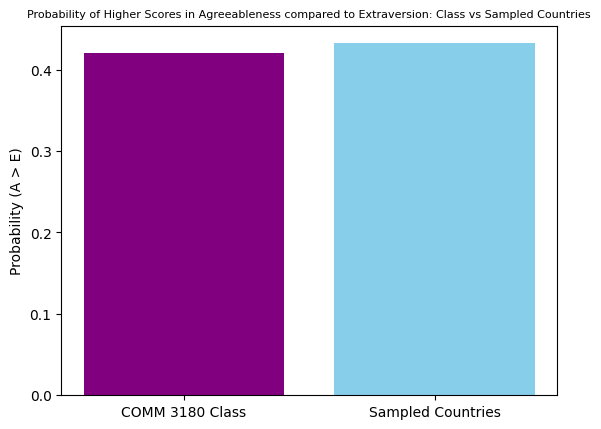

import pandas as pd
import re
import numpy as np
import matplotlib.pyplot as plt
from IPython.display import displayWhat is the probability that people score higher in agreeableness than extraversion according to the results of Big Five Personality Test by Open Source Psychometrics Project?

- Image icons from verywellmind.com
Introduction
This analysis explores whether respondents are more likely to score higher in agreeableness than in extraversion using data from the Big Five Personality test. Comparing these two traits will allow us to dig deeper into how characterics in personality show up in a sample and find patterns that go beyond just looking at individual scores. Additionally, we can compare the global respondants to the results from our COMM 3180 class data to see whether the trends that appear in the wider population are reflected within our own group. Overall, this comparison helps us think about generalizability, whether findings from a large dataset align with a smaller, more specific sample.
To put it simply, the story that this data tells encourages us to reflect on how our class compares to respondents worldwide.
TO BE CLEAR!
The analysis being done to answer this questions is looking at the percentiles of the Big 5 personality traits, NOT raw scores.
- All of the data analysis being conducted under “Preliminary Data” is to set up for the main analysis that will answer the main question.
- Scroll past preliminary data for the analysis.
Preliminary Data: Unscored
big5_df = pd.read_csv('data/openpsych_data.csv', sep='\t')big5_df.columnsIndex(['race', 'age', 'engnat', 'gender', 'hand', 'source', 'country', 'E1',
'E2', 'E3', 'E4', 'E5', 'E6', 'E7', 'E8', 'E9', 'E10', 'N1', 'N2', 'N3',
'N4', 'N5', 'N6', 'N7', 'N8', 'N9', 'N10', 'A1', 'A2', 'A3', 'A4', 'A5',
'A6', 'A7', 'A8', 'A9', 'A10', 'C1', 'C2', 'C3', 'C4', 'C5', 'C6', 'C7',
'C8', 'C9', 'C10', 'O1', 'O2', 'O3', 'O4', 'O5', 'O6', 'O7', 'O8', 'O9',
'O10'],
dtype='str')big5_country_df = big5_df['country']- This is to help filter the data by country
big5_df['country'].nunique()158questions = '''
E1 I am the life of the party.
E2 I don't talk a lot.
E3 I feel comfortable around people.
E4 I keep in the background.
E5 I start conversations.
E6 I have little to say.
E7 I talk to a lot of different people at parties.
E8 I don't like to draw attention to myself.
E9 I don't mind being the center of attention.
E10 I am quiet around strangers.
N1 I get stressed out easily.
N2 I am relaxed most of the time.
N3 I worry about things.
N4 I seldom feel blue.
N5 I am easily disturbed.
N6 I get upset easily.
N7 I change my mood a lot.
N8 I have frequent mood swings.
N9 I get irritated easily.
N10 I often feel blue.
A1 I feel little concern for others.
A2 I am interested in people.
A3 I insult people.
A4 I sympathize with others' feelings.
A5 I am not interested in other people's problems.
A6 I have a soft heart.
A7 I am not really interested in others.
A8 I take time out for others.
A9 I feel others' emotions.
A10 I make people feel at ease.
C1 I am always prepared.
C2 I leave my belongings around.
C3 I pay attention to details.
C4 I make a mess of things.
C5 I get chores done right away.
C6 I often forget to put things back in their proper place.
C7 I like order.
C8 I shirk my duties.
C9 I follow a schedule.
C10 I am exacting in my work.
O1 I have a rich vocabulary.
O2 I have difficulty understanding abstract ideas.
O3 I have a vivid imagination.
O4 I am not interested in abstract ideas.
O5 I have excellent ideas.
O6 I do not have a good imagination.
O7 I am quick to understand things.
O8 I use difficult words.
O9 I spend time reflecting on things.
O10 I am full of ideas.
'''big5_questions_df = pd.DataFrame([item.split('\t') for item in questions.splitlines() if item>''])big5_questions_df| 0 | 1 | |
|---|---|---|
| 0 | E1 | I am the life of the party. |
| 1 | E2 | I don't talk a lot. |
| 2 | E3 | I feel comfortable around people. |
| 3 | E4 | I keep in the background. |
| 4 | E5 | I start conversations. |
| 5 | E6 | I have little to say. |
| 6 | E7 | I talk to a lot of different people at parties. |
| 7 | E8 | I don't like to draw attention to myself. |
| 8 | E9 | I don't mind being the center of attention. |
| 9 | E10 | I am quiet around strangers. |
| 10 | N1 | I get stressed out easily. |
| 11 | N2 | I am relaxed most of the time. |
| 12 | N3 | I worry about things. |
| 13 | N4 | I seldom feel blue. |
| 14 | N5 | I am easily disturbed. |
| 15 | N6 | I get upset easily. |
| 16 | N7 | I change my mood a lot. |
| 17 | N8 | I have frequent mood swings. |
| 18 | N9 | I get irritated easily. |
| 19 | N10 | I often feel blue. |
| 20 | A1 | I feel little concern for others. |
| 21 | A2 | I am interested in people. |
| 22 | A3 | I insult people. |
| 23 | A4 | I sympathize with others' feelings. |
| 24 | A5 | I am not interested in other people's problems. |
| 25 | A6 | I have a soft heart. |
| 26 | A7 | I am not really interested in others. |
| 27 | A8 | I take time out for others. |
| 28 | A9 | I feel others' emotions. |
| 29 | A10 | I make people feel at ease. |
| 30 | C1 | I am always prepared. |
| 31 | C2 | I leave my belongings around. |
| 32 | C3 | I pay attention to details. |
| 33 | C4 | I make a mess of things. |
| 34 | C5 | I get chores done right away. |
| 35 | C6 | I often forget to put things back in their pro... |
| 36 | C7 | I like order. |
| 37 | C8 | I shirk my duties. |
| 38 | C9 | I follow a schedule. |
| 39 | C10 | I am exacting in my work. |
| 40 | O1 | I have a rich vocabulary. |
| 41 | O2 | I have difficulty understanding abstract ideas. |
| 42 | O3 | I have a vivid imagination. |
| 43 | O4 | I am not interested in abstract ideas. |
| 44 | O5 | I have excellent ideas. |
| 45 | O6 | I do not have a good imagination. |
| 46 | O7 | I am quick to understand things. |
| 47 | O8 | I use difficult words. |
| 48 | O9 | I spend time reflecting on things. |
| 49 | O10 | I am full of ideas. |
- This allows us to see all of the question in the survey and the personality trait associated with each
factor_map = { 1: 'E',
2: 'A',
3: 'C',
4: 'N',
5: 'O' }ipip_df = pd.read_html('big5_questions.html', header=0)[0]
ipip_df = ipip_df.rename(columns={'Unnamed: 1': 'text', 'Unnamed: 7': 'factor_and_direction'})[['text','factor_and_direction']]
ipip_df[['factor','direction']]=ipip_df['factor_and_direction'].str.extract(r'([1-5])(.)')
ipip_df['category']=ipip_df['factor'].astype(int).map(factor_map)ipip_df = ipip_df.assign(number=np.repeat(np.arange(1,11),5))
ipip_df = ipip_df.assign(qcode=ipip_df['category'].str.cat(ipip_df['number'].astype(str))) neg_items = ipip_df.query('direction=="-"')['qcode']
neg_items1 A1
3 N1
5 E2
7 C2
9 O2
11 A3
13 N3
15 E4
17 C4
19 O4
21 A5
23 N5
25 E6
27 C6
28 N6
29 O6
31 A7
33 N7
35 E8
37 C8
38 N8
43 N9
45 E10
48 N10
Name: qcode, dtype: strPreliminary Data: Scored
big5_scored_df = pd.read_csv('data/openpsych_data_scored.csv')big5_scored_df.shape(19719, 69)big5_scored_df.columnsIndex(['race', 'age', 'engnat', 'gender', 'hand', 'source', 'country', 'E1',
'E2', 'E3', 'E4', 'E5', 'E6', 'E7', 'E8', 'E9', 'E10', 'N1', 'N2', 'N3',
'N4', 'N5', 'N6', 'N7', 'N8', 'N9', 'N10', 'A1', 'A2', 'A3', 'A4', 'A5',
'A6', 'A7', 'A8', 'A9', 'A10', 'C1', 'C2', 'C3', 'C4', 'C5', 'C6', 'C7',
'C8', 'C9', 'C10', 'O1', 'O2', 'O3', 'O4', 'O5', 'O6', 'O7', 'O8', 'O9',
'O10', 'race_cat', 'gender_cat', 'O', 'C', 'E', 'A', 'N', 'E_pct',
'A_pct', 'C_pct', 'N_pct', 'O_pct'],
dtype='str')big5_scored_df[['O','C','E','A','N','E_pct','A_pct', 'C_pct', 'N_pct', 'O_pct']]| O | C | E | A | N | E_pct | A_pct | C_pct | N_pct | O_pct | |
|---|---|---|---|---|---|---|---|---|---|---|
| 0 | 43 | 47 | 44 | 46 | 49 | 93 | 85 | 97 | 99 | 70 |
| 1 | 26 | 42 | 22 | 35 | 29 | 20 | 27 | 86 | 50 | 2 |
| 2 | 45 | 49 | 35 | 38 | 14 | 68 | 42 | 98 | 3 | 81 |
| 3 | 41 | 26 | 22 | 37 | 17 | 20 | 37 | 16 | 8 | 58 |
| 4 | 34 | 34 | 34 | 44 | 30 | 64 | 76 | 52 | 54 | 20 |
| ... | ... | ... | ... | ... | ... | ... | ... | ... | ... | ... |
| 19714 | 35 | 36 | 21 | 42 | 19 | 18 | 65 | 62 | 13 | 25 |
| 19715 | 30 | 32 | 25 | 36 | 39 | 30 | 32 | 42 | 86 | 8 |
| 19716 | 37 | 23 | 21 | 26 | 10 | 18 | 5 | 7 | 0 | 35 |
| 19717 | 42 | 43 | 21 | 38 | 20 | 18 | 42 | 89 | 16 | 64 |
| 19718 | 49 | 36 | 24 | 35 | 23 | 27 | 27 | 62 | 26 | 96 |
19719 rows × 10 columns
- This allows us to see the scores of the respondants and their percentiles
cat_cols = {
cat : [f'{cat}{n+1}' for n in range(10)]
for cat in ('O','C','E','A','N')
}cat_cols{'O': ['O1', 'O2', 'O3', 'O4', 'O5', 'O6', 'O7', 'O8', 'O9', 'O10'],
'C': ['C1', 'C2', 'C3', 'C4', 'C5', 'C6', 'C7', 'C8', 'C9', 'C10'],
'E': ['E1', 'E2', 'E3', 'E4', 'E5', 'E6', 'E7', 'E8', 'E9', 'E10'],
'A': ['A1', 'A2', 'A3', 'A4', 'A5', 'A6', 'A7', 'A8', 'A9', 'A10'],
'N': ['N1', 'N2', 'N3', 'N4', 'N5', 'N6', 'N7', 'N8', 'N9', 'N10']}for cat, cols in cat_cols.items():
big5_scored_df[cat]=big5_scored_df[cols].sum(axis=1)Analysis
STEPS 1. Find a random sample of 10 countries 2. Filter the data to only show the sampled countried 3. Calculate the probability that the individuals in the sampled countries are greater in agreeableness than extroversion 4. Visualize the findings
unique = big5_df["country"].drop_duplicates()
unique0 US
2 PK
3 RO
7 IN
10 IT
..
16741 ZM
16914 PY
16962 UZ
18180 TC
19682 KG
Name: country, Length: 159, dtype: str- Here we have all of the abbreviations of countries that are represented by the people who took the survey
country_sample = unique.sample(n=10, random_state=40)
country_sample246 AR
6254 LS
10920 GY
16 FR
5327 KH
413 HK
7419 MP
620 LK
228 DE
1980 ZW
Name: country, dtype: strHere is the random sample of the 10 countries that will be examined in this analysis. We can look at the data from the survey respondants from these listed countries to see each individuals percentile score in agreeableness and extraversion. This randomization also ensures that the data is diverse because cultural norms may impact/skew how people view their own personaility
big5_sample_df = big5_df[big5_df['country'].isin(country_sample)]
big5_sample_df| race | age | engnat | gender | hand | source | country | E1 | E2 | E3 | ... | O1 | O2 | O3 | O4 | O5 | O6 | O7 | O8 | O9 | O10 | |
|---|---|---|---|---|---|---|---|---|---|---|---|---|---|---|---|---|---|---|---|---|---|
| 16 | 13 | 19 | 1 | 2 | 1 | 2 | FR | 1 | 3 | 2 | ... | 5 | 1 | 4 | 1 | 4 | 1 | 5 | 5 | 5 | 4 |
| 228 | 1 | 39 | 1 | 2 | 1 | 1 | DE | 1 | 3 | 2 | ... | 4 | 2 | 2 | 2 | 3 | 4 | 4 | 4 | 4 | 3 |
| 240 | 3 | 15 | 2 | 2 | 2 | 1 | DE | 1 | 3 | 1 | ... | 3 | 1 | 5 | 1 | 4 | 1 | 5 | 4 | 5 | 4 |
| 246 | 1 | 26 | 2 | 1 | 2 | 1 | AR | 2 | 1 | 4 | ... | 5 | 1 | 5 | 1 | 5 | 1 | 4 | 5 | 2 | 4 |
| 387 | 3 | 28 | 2 | 1 | 1 | 1 | DE | 1 | 4 | 3 | ... | 5 | 3 | 5 | 3 | 3 | 1 | 3 | 5 | 5 | 5 |
| ... | ... | ... | ... | ... | ... | ... | ... | ... | ... | ... | ... | ... | ... | ... | ... | ... | ... | ... | ... | ... | ... |
| 19475 | 3 | 39 | 2 | 2 | 1 | 1 | DE | 3 | 1 | 4 | ... | 5 | 1 | 5 | 1 | 5 | 1 | 5 | 5 | 5 | 5 |
| 19486 | 3 | 25 | 2 | 2 | 1 | 5 | FR | 2 | 4 | 4 | ... | 4 | 1 | 5 | 1 | 5 | 1 | 5 | 4 | 5 | 5 |
| 19574 | 3 | 28 | 2 | 1 | 1 | 3 | AR | 2 | 5 | 3 | ... | 5 | 2 | 5 | 1 | 3 | 1 | 4 | 4 | 5 | 3 |
| 19593 | 3 | 18 | 2 | 2 | 2 | 1 | DE | 1 | 2 | 2 | ... | 5 | 1 | 2 | 2 | 4 | 4 | 5 | 3 | 3 | 2 |
| 19673 | 1 | 16 | 2 | 2 | 1 | 1 | AR | 1 | 4 | 1 | ... | 4 | 1 | 5 | 1 | 3 | 1 | 4 | 4 | 5 | 5 |
444 rows × 57 columns
big5_sample_scored = big5_scored_df[big5_scored_df['country'].isin(country_sample)]
big5_sample_scored| race | age | engnat | gender | hand | source | country | E1 | E2 | E3 | ... | O | C | E | A | N | E_pct | A_pct | C_pct | N_pct | O_pct | |
|---|---|---|---|---|---|---|---|---|---|---|---|---|---|---|---|---|---|---|---|---|---|
| 16 | 13 | 19 | 1 | 2 | 1 | 2 | FR | 1 | 3 | 2 | ... | 47 | 36 | 20 | 17 | 33 | 15 | 0 | 62 | 66 | 90 |
| 228 | 1 | 39 | 1 | 2 | 1 | 1 | DE | 1 | 3 | 2 | ... | 34 | 28 | 19 | 39 | 24 | 13 | 48 | 23 | 30 | 20 |
| 240 | 3 | 15 | 2 | 2 | 2 | 1 | DE | 1 | 3 | 1 | ... | 45 | 24 | 20 | 34 | 15 | 15 | 23 | 10 | 5 | 81 |
| 246 | 1 | 26 | 2 | 1 | 2 | 1 | AR | 2 | 5 | 4 | ... | 45 | 46 | 38 | 35 | 27 | 77 | 27 | 95 | 42 | 81 |
| 387 | 3 | 28 | 2 | 1 | 1 | 1 | DE | 1 | 2 | 3 | ... | 42 | 43 | 25 | 32 | 46 | 30 | 17 | 89 | 97 | 64 |
| ... | ... | ... | ... | ... | ... | ... | ... | ... | ... | ... | ... | ... | ... | ... | ... | ... | ... | ... | ... | ... | ... |
| 19475 | 3 | 39 | 2 | 2 | 1 | 1 | DE | 3 | 5 | 4 | ... | 50 | 41 | 42 | 49 | 42 | 88 | 96 | 83 | 92 | 98 |
| 19486 | 3 | 25 | 2 | 2 | 1 | 5 | FR | 2 | 2 | 4 | ... | 48 | 35 | 21 | 42 | 34 | 18 | 65 | 57 | 70 | 93 |
| 19574 | 3 | 28 | 2 | 1 | 1 | 3 | AR | 2 | 1 | 3 | ... | 43 | 36 | 19 | 34 | 21 | 13 | 23 | 62 | 19 | 70 |
| 19593 | 3 | 18 | 2 | 2 | 2 | 1 | DE | 1 | 4 | 2 | ... | 35 | 39 | 24 | 23 | 40 | 27 | 3 | 76 | 88 | 25 |
| 19673 | 1 | 16 | 2 | 2 | 1 | 1 | AR | 1 | 2 | 1 | ... | 45 | 23 | 14 | 35 | 16 | 4 | 27 | 7 | 6 | 81 |
444 rows × 69 columns
Each row in this dataset represents one respondant who did the Big Five Personality test which includes their demographic information and personality trait results. The columns show the different variables age, gender, and country, as well as raw trait scores (O, C, E, A, N) and percentile rankings.
Using these rows and columns we can compare agreeableness and extraversion scores to see whether people in the sample and the class are more likely to rank higher in one trait over the other.
A_GT_E_prob = ((big5_sample_scored['A_pct'] > big5_sample_scored['E_pct']).mean())
print(f'The probability that people in the sample score higher in agreeableness than extraversion is {A_GT_E_prob}')
percent_A_GT_E_prob = ((A_GT_E_prob)*100)
print(f'Which is a {percent_A_GT_E_prob}%')The probability that people in the sample score higher in agreeableness than extraversion is 0.43243243243243246
Which is a 43.24324324324324%big5_sample_scored['A_GT_E_prob'] = big5_sample_scored['A_pct'] > big5_sample_scored['E_pct']big5_sample_scored.groupby('country')['A_GT_E_prob'].mean()country
AR 0.487805
DE 0.429319
FR 0.348837
GY 1.000000
HK 0.512195
KH 0.333333
LK 0.548387
LS 0.500000
MP 0.500000
ZW 1.000000
Name: A_GT_E_prob, dtype: float64Here we find that in the overall sample the probaility that people score higher in agreeablness over extravesion is about 0.432.
However, there is a lot of variance in the probability of the individual countries in the sample. For example, Hong Kong and Sri Lanka have probabilities that are above 0.5 which signals that a somewhat majority of respondents tend to score higher in agreeableness than extraversion. Contrarily, there are countries like France and Germany where the probabilty of scoring high in agreeableness is low. There are also a few countries that show values closer to 1.0 which may be the result of other factors like small sample size instead of personality differences. Overall, the variation across countries suggests that patterns in personality are different worldwide and signifies that there is something to be revealed by comparing global trends to our class data.
Looking at the other side (probability that the people in the sample socre higher on extraversion rather than agreeableness)
E_GT_A_prob = ((big5_sample_scored['E_pct'] > big5_sample_scored['A_pct']).mean())
print(f'The probability that people in the sample score higher in extraversion rather than agreeableness is {E_GT_A_prob}')
percent_E_GT_A_prob = (E_GT_A_prob*100)
print(f'Which is {percent_E_GT_A_prob}%')The probability that people in the sample score higher in extraversion rather than agreeableness is 0.5563063063063063
Which is 55.63063063063063%big5_sample_scored['E_GT_A_prob'] = big5_sample_scored['E_pct'] > big5_sample_scored['A_pct']big5_sample_scored.groupby('country')['E_GT_A_prob'].mean()country
AR 0.487805
DE 0.554974
FR 0.643411
GY 0.000000
HK 0.487805
KH 0.666667
LK 0.451613
LS 0.500000
MP 0.500000
ZW 0.000000
Name: E_GT_A_prob, dtype: float64import matplotlib.pyplot as plt
labels = ['Higher Agreeableness', 'Higher Extraversion']
values = [A_GT_E_prob, E_GT_A_prob]
plt.bar(labels, values)
plt.bar(labels, values, color=['mediumvioletred', 'gold'])
plt.ylabel('Probabilitiy')
plt.title('Probability of Higher Scores in Agreeableness vs Extraversion from Sampled Countries',fontsize=8)Text(0.5, 1.0, 'Probability of Higher Scores in Agreeableness vs Extraversion from Sampled Countries')
Here we find that the probability of scoring in a higher percentile of extraversion over agreeableness is about 0.556.
The bar chart compares the probability that respondents in the sampled countries score higher in agreeableness versus extraversion. The taller gold bar shows a larger proportion of people in the sample have higher extraversion percentiles than agreeableness percentiles.
While the difference is not extremely large it tell us that extraversion may be a more present trait in this dataset. The visualization helps make this imbalance more clear.
Comparing to class data
big5_class_df = pd.read_csv('data/class_big5_data.csv')big5_class_df.columnsIndex(['Name', 'first_name', 'I', 'II', 'III', 'IV', 'V'], dtype='str')big5_class_df[['Name', 'first_name', 'I', 'II', 'III', 'IV', 'V']]| Name | first_name | I | II | III | IV | V | |
|---|---|---|---|---|---|---|---|
| 0 | Ambrosius,Colin James | Colin | 74.0 | 70.0 | 80.0 | 97.0 | 96.0 |
| 1 | Amro,Tarek Junayd | Tarek | 96.0 | 22.0 | 71.0 | 93.0 | 59.0 |
| 2 | Boltman,Glynn Marie | Glynn | 92.0 | 52.0 | 89.0 | 89.0 | 83.0 |
| 3 | Chi,Emilie Hamin | Emilie | 8.0 | 11.0 | 91.0 | 96.0 | 34.0 |
| 4 | Crawford,Kenadi Rose | Kenadi | 96.0 | 66.0 | 87.0 | 76.0 | 88.0 |
| 5 | Garcia Maldonado,David | David | 42.0 | 22.0 | 71.0 | 52.0 | 34.0 |
| 6 | Goldman,Maggie | Maggie | 90.0 | 66.0 | 56.0 | 52.0 | 70.0 |
| 7 | Grgecic,Kyle Stephen | Kyle | 98.0 | 87.0 | 80.0 | 4.0 | 95.0 |
| 8 | Herzog,Fiona Stella | Fiona | 92.0 | 57.0 | 67.0 | 92.0 | 84.0 |
| 9 | Hovannisian,Sose Siroon | Sose | 95.0 | 52.0 | 83.0 | 52.0 | 65.0 |
| 10 | Jacobs,Jenna Margaret | Jenna | 41.0 | 78.0 | 67.0 | 92.0 | 3.0 |
| 11 | Lawson,Nina Lin | Nina | 81.0 | 11.0 | 62.0 | 76.0 | 46.0 |
| 12 | Maharaj,Nicholas Krishna | Nicholas | 57.0 | 66.0 | 83.0 | 46.0 | 40.0 |
| 13 | Park,Daniel | Daniel | 7.0 | 26.0 | 51.0 | 87.0 | 40.0 |
| 14 | Rosen,Alex Justin | Alex | 54.0 | 43.0 | 67.0 | 76.0 | 52.0 |
| 15 | Sebhatleab,Noah | Noah | 78.0 | 91.0 | 89.0 | 76.0 | 89.0 |
| 16 | Singhal,Arhan | Arhan | 83.0 | 82.0 | 11.0 | 16.0 | 76.0 |
| 17 | Wang,Sophia | Sophia | 74.0 | 11.0 | 40.0 | 9.0 | 28.0 |
| 18 | Zhang,Wilson | Wilson | 33.0 | 48.0 | 10.0 | 13.0 | 1.0 |
- This table gives us a rundown of all of the COMM 3180 students’ results which include their names and percentile scores.
big5_class_df = big5_class_df.rename(columns={
'I': 'E_class_pct',
'II': 'N_class_pct',
'III': 'A_class_pct',
'IV': 'C_class_pct',
'V': 'O_class_pct'
})big5_class_df| Name | first_name | E_class_pct | N_class_pct | A_class_pct | C_class_pct | O_class_pct | |
|---|---|---|---|---|---|---|---|
| 0 | Ambrosius,Colin James | Colin | 74.0 | 70.0 | 80.0 | 97.0 | 96.0 |
| 1 | Amro,Tarek Junayd | Tarek | 96.0 | 22.0 | 71.0 | 93.0 | 59.0 |
| 2 | Boltman,Glynn Marie | Glynn | 92.0 | 52.0 | 89.0 | 89.0 | 83.0 |
| 3 | Chi,Emilie Hamin | Emilie | 8.0 | 11.0 | 91.0 | 96.0 | 34.0 |
| 4 | Crawford,Kenadi Rose | Kenadi | 96.0 | 66.0 | 87.0 | 76.0 | 88.0 |
| 5 | Garcia Maldonado,David | David | 42.0 | 22.0 | 71.0 | 52.0 | 34.0 |
| 6 | Goldman,Maggie | Maggie | 90.0 | 66.0 | 56.0 | 52.0 | 70.0 |
| 7 | Grgecic,Kyle Stephen | Kyle | 98.0 | 87.0 | 80.0 | 4.0 | 95.0 |
| 8 | Herzog,Fiona Stella | Fiona | 92.0 | 57.0 | 67.0 | 92.0 | 84.0 |
| 9 | Hovannisian,Sose Siroon | Sose | 95.0 | 52.0 | 83.0 | 52.0 | 65.0 |
| 10 | Jacobs,Jenna Margaret | Jenna | 41.0 | 78.0 | 67.0 | 92.0 | 3.0 |
| 11 | Lawson,Nina Lin | Nina | 81.0 | 11.0 | 62.0 | 76.0 | 46.0 |
| 12 | Maharaj,Nicholas Krishna | Nicholas | 57.0 | 66.0 | 83.0 | 46.0 | 40.0 |
| 13 | Park,Daniel | Daniel | 7.0 | 26.0 | 51.0 | 87.0 | 40.0 |
| 14 | Rosen,Alex Justin | Alex | 54.0 | 43.0 | 67.0 | 76.0 | 52.0 |
| 15 | Sebhatleab,Noah | Noah | 78.0 | 91.0 | 89.0 | 76.0 | 89.0 |
| 16 | Singhal,Arhan | Arhan | 83.0 | 82.0 | 11.0 | 16.0 | 76.0 |
| 17 | Wang,Sophia | Sophia | 74.0 | 11.0 | 40.0 | 9.0 | 28.0 |
| 18 | Zhang,Wilson | Wilson | 33.0 | 48.0 | 10.0 | 13.0 | 1.0 |
- Similarly, this table shows the same data as the first just with renamed columns to match the description of the global data.
- E_class_pct is Extraversion
- N_class_pct is Nueroticism
- A_class_pct is Agreeableness
- C_class_pct is Conscientiousness
- O_class_pct is Openness
A_GT_E_class_prob = ((big5_class_df['A_class_pct'] > big5_class_df['E_class_pct']).mean())
print(f'The probability that the COMM 3180 class are more agreeable than extroverted is {A_GT_E_class_prob}')
percent_A_GT_E_class_prob = ((A_GT_E_class_prob)*100)
print(f'Which is {percent_A_GT_E_class_prob}%')The probability that the COMM 3180 class are more agreeable than extroverted is 0.42105263157894735
Which is 42.10526315789473%big5_class_df['A_GT_E_class_prob'] = big5_class_df['A_class_pct'] > big5_class_df['E_class_pct']big5_class_df.groupby('first_name')['A_GT_E_class_prob'].mean()first_name
Alex 1.0
Arhan 0.0
Colin 1.0
Daniel 1.0
David 1.0
Emilie 1.0
Fiona 0.0
Glynn 0.0
Jenna 1.0
Kenadi 0.0
Kyle 0.0
Maggie 0.0
Nicholas 1.0
Nina 0.0
Noah 1.0
Sophia 0.0
Sose 0.0
Tarek 0.0
Wilson 0.0
Name: A_GT_E_class_prob, dtype: float64This output shows which individual students in the COMM 3180 class have higher agreeableness percentiles than extraversion percentiles. Each 1.0 (True value) is a student who is more agreeable than extroverted, while 0.0 (False value) shows the opposite. Since there are fewer 1.0 values in the class data, these results emphasize the earlier finding that the probability of socring higher in extraversion is more common than socring higher in agreeableness.
import matplotlib.pyplot as plt
labels = ['COMM 3180 Class', 'Sampled Countries']
values = [A_GT_E_class_prob, A_GT_E_prob]
plt.bar(labels, values)
plt.bar(labels, values, color=['purple', 'skyblue'])
plt.ylabel('Probability (A > E)')
plt.title('Probability of Higher Scores in Agreeableness compared to Extraversion: Class vs Sampled Countries',fontsize=8)Text(0.5, 1.0, 'Probability of Higher Scores in Agreeableness compared to Extraversion: Class vs Sampled Countries')
The visualization compares the probability that respondants scored higher in agreeableness as opposed to extraversion in the COMM 3180 class and the Sampled Countries. Here we can clearly see that there is little difference in the probabilities which suggests that our class exhibits a similar pattern to the random sample. However, in both groups, there was a greater probability of scoring in higher percentiles of extraversion.
Another way to look at this is that the trends observed in the global data may be generalizable to our class.
Conclusion
Taking all parts into consideration, the goal of this analysis was to determine whether individuals are more likely to score higher in agreeableness or extraversion first from the Open Source Psychometrics Project, filtering by country, and then comparing it to the COMM 3180 class results. The answers ending up being 0.432 for the sample and 0.421 for the class and it was also found that in both the Open Pysch and class data the probability of socring higher in agreeableness was lower than scoring high in extraversion.
But, in both the sampled countries and the COMM 3180 class, the probability of higher agreeableness compared to extraversion was similar meaning that it aligns with the global personality trends seen in the random sample. While there were slight differences in the data, the results showed that both groups were not that much more agreeable than extroverted conveying that there is a balance in the patterns of the two traits. Most importantly, these findings highlight how probability and data visualization can help us compare individual behaviors to patterns in the larger population.